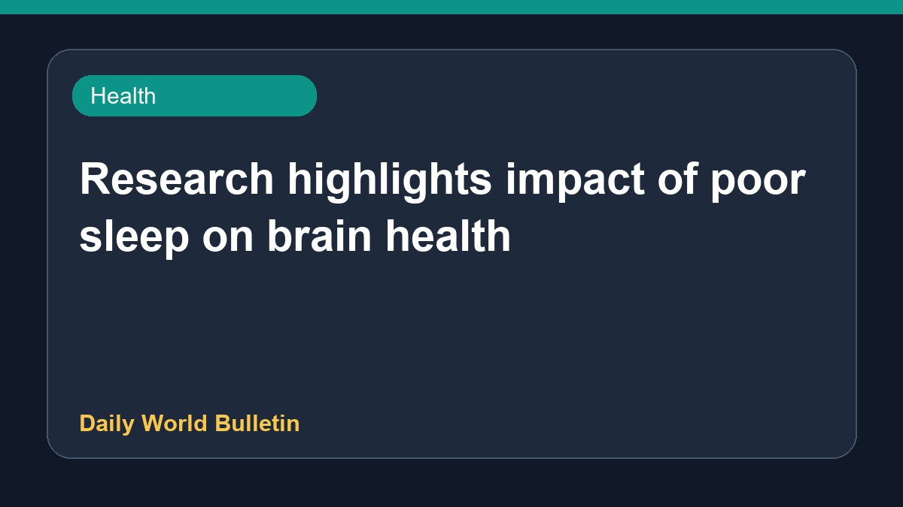

Research highlights impact of poor sleep on brain health

Recent studies examine how chronic sleep problems and poor sleep quality negatively impact the brain, potentially increasing the risk of Alzheimer's disease. Reports suggest that both insufficient rest and regularly sleeping more than eight and a half hours each night may serve as early indicators of cognitive concerns. Researchers are exploring the specific ways inadequate rest interacts with brain genes, highlighting the importance of maintaining proper sleep habits for long-term neurological health.
Original source: Health News Sources
Research reveals how poor sleep affects brains more - The Shillong Times ↗
Research reveals how poor sleep affects brains more - The Shillong Times ↗